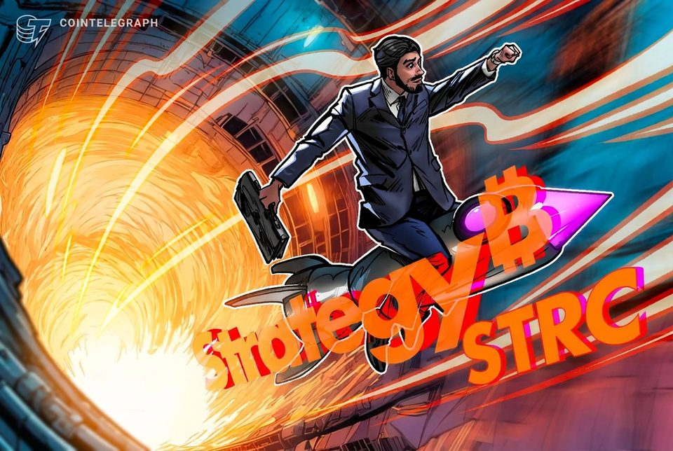
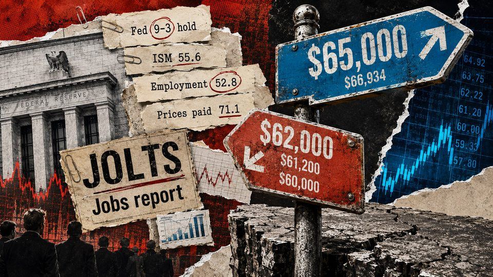

August 4, 2026
Daily headline set with source diversity, cleaned links, and local static rendering.
Coldcard crisis hits $130 million – proving ‘not your keys' is meaningless if you trust a single device to generate them
Block's Bitcoin Engineering and Security team and independent Bitcoin Core developers have traced the recent batch of Coinkite Coldcard wallet losses to a specific firmware defect that exposed a hidden weakness in...

Five Convicted of Imprisoning Crypto Millionaires in London 'Torture' Ordeal
Two of the five were also convicted of conspiracy to blackmail, in a case police won without either victim testifying.

Strategy's STRC retakes $90 after 24% rebound from June closing low
The preferred shares have recovered nearly 24% from their June closing low as Strategy builds its cash reserve and repurchases STRC.
Live updates: Bitcoin at $63,600 as rare US-Japan yen action tests carry-trade fears
Live updates: Bitcoin at $63,600 as rare US-Japan yen action tests carry-trade fears

Bitcoin must clear $65,000 before Friday, or jobs data could turn $62,000 into a trapdoor to $60,000
Bitcoin and jobs data are on a collision course this week, with the price pinned between $62,200 and $65,000 after the first economic release worked against the bulls. The ISM Manufacturing PMI printed 55.6 on Aug. 3,...
Marmot Researchers Turn to OnlyFans for Funding—And There Are Meme Coins Too
Scientists are using OnlyFans to help fund decades of marmot research, while unofficial memecoins inspired by the project have emerged on Solana.
US yen intervention puts Bitcoin, risk assets on notice for liquidity flux
The first US-Japan joint yen intervention in 28 years came amid record bond yields and worries about the yen carry trade.
Bhutan's GMC puts part of its bitcoin treasury to work after 10,000 BTC pledge
Bhutan's GMC puts part of its bitcoin treasury to work after 10,000 BTC pledge
Strategy sells $395 million in Bitcoin and MSTR stock to buyback $81 million in STRC and build cash reserve to $4 billion
Strategy's latest Bitcoin sale lifted its 2026 disposals to 5,258 BTC, the largest amount it has sold in any year since adopting the asset in 2020, as the company redirects capital toward supporting its preferred...
Former FBI Agent Charged With Stealing Nearly $1 Million in Crypto and Using ChatGPT for Investment Advice
Prosecutors say the former counterintelligence supervisor stole cryptocurrency from wallets tied to FBI investigations before asking ChatGPT how to invest the money and relocate to Europe.
Apple briefly removes Telegram from App Store, Gram rebounds
Apple restored Telegram after the messaging platform removed content that violated its child safety policies and banned the user who posted it.
Why Jim Cramer's quantum panic isn't rattling bitcoin as price holds steady around $64,000
Why Jim Cramer's quantum panic isn't rattling bitcoin as price holds steady around $64,000